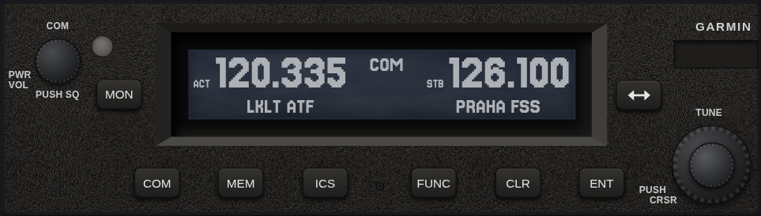
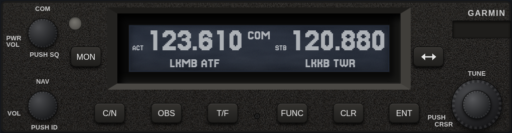
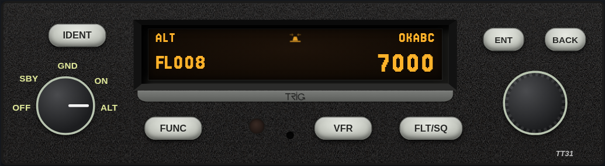
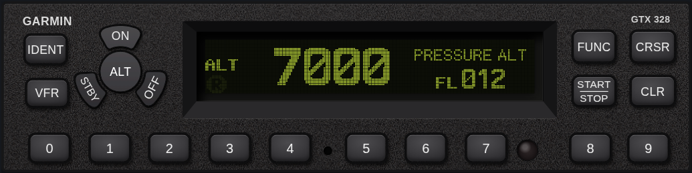
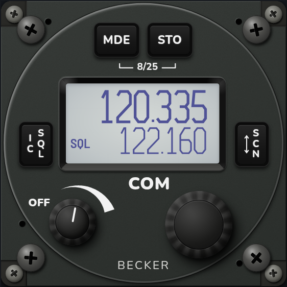
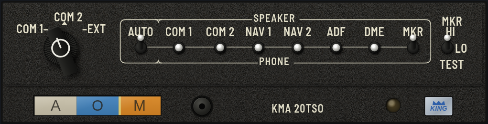

GTR 225A
VHF COM transceiver with 8.33 kHz spacing, intercom, timers and frequency database.
Avionics simulators for ground practice, built from the manufacturers' manuals. Pick a unit.

VHF COM transceiver with 8.33 kHz spacing, intercom, timers and frequency database.

NAV/COM: the COM side of the GTR plus a VOR/LOC receiver with OBS/CDI, TO/FROM, DST and Morse ident.

Mode S transponder: mode knob, squawk and Flight ID entry, IDENT, VFR code, flight timer, timer and altitude monitor.

Mode S transponder: mode keys, code entry, IDENT and VFR, pressure altitude, flight time, altitude monitor, count up / down timers, Flight ID entry and the installer configuration pages.

57 mm VHF COM: standard, direct tune and channel modes, scan, 99 labeled channels, last channels, intercom and pilot menus, and the installation setup.

Audio control panel with marker beacon receiver: microphone selector, speaker / phone toggles for every receiver, AUTO switch, and the marker lamps and tones on a real Czech ILS approach.